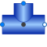

TeeJunctionVolumeSplitting/joining component with static balances for a dynamic control volume |

|
Information
This information is part of the Modelica Standard Library maintained by the Modelica Association.
This model introduces a mixing volume into a junction. This might be useful to examine the non-ideal mixing taking place in a real junction.Parameters (11)
| energyDynamics |
Value: system.energyDynamics Type: Dynamics Description: Formulation of energy balance |
|---|---|
| massDynamics |
Value: system.massDynamics Type: Dynamics Description: Formulation of mass balance |
| substanceDynamics |
Value: massDynamics Type: Dynamics Description: Formulation of substance balance |
| traceDynamics |
Value: massDynamics Type: Dynamics Description: Formulation of trace substance balance |
| p_start |
Value: system.p_start Type: AbsolutePressure (Pa) Description: Start value of pressure |
| use_T_start |
Value: true Type: Boolean Description: = true, use T_start, otherwise h_start |
| T_start |
Value: if use_T_start then system.T_start else Medium.temperature_phX(p_start, h_start, X_start) Type: Temperature (K) Description: Start value of temperature |
| h_start |
Value: if use_T_start then Medium.specificEnthalpy_pTX(p_start, T_start, X_start) else Medium.h_default Type: SpecificEnthalpy (J/kg) Description: Start value of specific enthalpy |
| X_start |
Value: Medium.X_default Type: MassFraction[Medium.nX] (kg/kg) Description: Start value of mass fractions m_i/m |
| C_start |
Value: Medium.C_default Type: ExtraProperty[Medium.nC] Description: Start value of trace substances |
| V |
Value: Type: Volume (m³) Description: Mixing volume inside junction |
Inputs (1)
| fluidVolume |
Default Value: V Type: Volume (m³) Description: Volume |
|---|
Connectors (3)
| port_1 |
Type: FluidPort_a |
|
|---|---|---|
| port_2 |
Type: FluidPort_b |
|
| port_3 |
Type: FluidPort_a |
Components (2)
| system |
Type: System Description: System properties |
|
|---|---|---|
| medium |
Type: BaseProperties |
Used in Examples (1)
|
Modelica.Fluid.Examples.AST_BatchPlant |